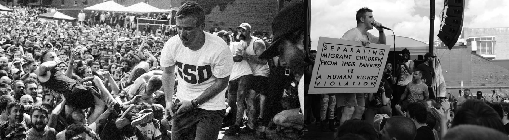

SOURCE: Kerrang Magazine
WORDS: Steven Bastias
Sabtu pagi itu, hampir 10.000 orang dari seluruh penjuru dunia datang untuk menyaksikan malam kedua reuni band hardcore asal Boston, yaitu Have Heart. Pertunjukan tersebut berlangsung di kampung halaman mereka. dua bagian di tempat parkir Palladium di Worcester, Massachusetts dan didalam gedung tersebut.
Untuk memberi gambaran tentang seberapa besar pertunjukan itu: bahkan festival hardcore yang mapan sekalipun hanya mampu menarik sekitar sepertiga dari angka penonton ini — yang mungkin membuat ini menjadi sebuah rekor kehadiran untuk satu pertunjukan hardcore di Amerika Serikat.
Bahkan pintu pertunjukan dibuka satu jam lebih awal dari yang sudah direncanakan, karena penonton ibarat badai yang akan datang yang mengancam akan merusak hari, antrean sudah memenuhi bagian blok jalan tersebut.
Saat pertunjukan dimulai, itu benar-benar berubah menjadi gila. Ditambah dengan satu pertujukan pembuka dari band superstar hardcore bernama Vein, Band ini tampil dengan presisi yang tampaknya mustahil. Apapun genre atau kategori mereka, Vein jelas siap untuk membuat jejak yang kuat pada lingkaran musik ini.
Setelah Vein, beberapa band berikutnya yang bermain mulai naik ke panggung.
pertama: Shipwreck, band hardcore metal yang berbasis di Massachusetts. Sang vokalis, JD Dowling, tampil di debut The Unbreakable dari Have Heart yang ada didalam album The Things We Carry. Shipwreck dibuka dengan Footsteps favorit penggemar, dan membawa sentuhan pribadi ke pertunjukan, JD Dowling berbicara tentang bagaimana dia bertemu vokalis Have Heart Patrick Flynn pada tahun 2003, dan membangun persahabatan yang akan membawa kedua band mereka keliling dunia.
Berikutnya adalah Richmond, orang Straight edge dari Virginia dengan band-nya Down to Nothing, yang telah unjuk gigi selama lebih dari 15 tahun. Mereka memainkan beberapa lagu dari seluruh album mereka dan mendapatkan reaksi empati yang konsisten. Down To Nothing jelas tetap menjadi kekuatan yang dapat diperhitungkan di kancah hardcore saat ini.
Akhirnya, acara utama pun telah dimulai. Antisipasi telah dibangun sepanjang hari; apakah orang-orang dikerumunan penonton telah melihat satu pertunjukan Have Heart saat mereka masih aktif sampai akhir 2009 atau melewatkan kesempatan mereka, namun pada kenyataannya semua orang yang hadir telah menunggu setidaknya 10 tahun untuk melihat salah satu band favorit mereka kembali berada diatas panggung pertunjukan.
Saat Have Heart naik ke panggung, mereka mulai merobek kerumunan dengan lagu The Unbreakable hingga tidak ada satu pun awan di langit. “He’s the band that’s playing while the ship sinks / The song of hope he forever sings / He taught the sun to shine,” teriak Pat. Sepertinya dia menceritakan peristiwa luar biasa yang terjadi pada hari yang sempurna di saat menulis lagu tersebut.
Kata-kata bijak dan pikiran intelektual Patrick Flynn di antara band-band lainnya selalu menjadi bagian integral dari pertunjukan mereka, dan hari itu tidak ada yang berbeda. Alih-alih tenggelam dalam nostalgia, Pat berbicara dengan berani menentang kebijakan imigrasi Amerika Serikat saat ini yang memisahkan anak-anak migran dari orang tua mereka dan memenjarakan mereka. Di atas panggung, sebuah papan bertuliskan: “Memisahkan anak-anak migran dari keluarga mereka adalah pelanggaran hak asasi manusia.”

Have Heart tidak kembali untuk merayakan hari jadi atau mencari uang dengan cepat — mereka ada di sini karena memang keharusan. Dalam iklim politik saat ini, kita membutuhkan pengingat bahwa suara kita dapat menjadi senjata untuk perubahan. Lirik Pat mencerminkan perjuangan untuk menjadi seorang manusia yang tidak sempurna, namun berusaha menjadi lebih baik. Perubahan harus dimulai dari diri kita sendiri dan komunitas kita agar dapat memberikan dampak perubahan yang lebih luas. Nyanyian penuh harapan band dibutuhkan lebih dari sebelumnya hari ini, untuk mengantarkan semangat baru untuk memperbaiki dunia di sekitar kita. Dan bagi banyak dari kita, itulah yang Have Heart — dan hardcore pada umumnya — selalu tentang: menciptakan alternatif untuk dunia yang tidak kita identifikasi. Karena jika kita tidak mengambilnya sendiri untuk memperbaiki dunia, tidak ada orang lain yang akan melakukannya.
Selama pertunjukan, Have Heart merobek lagu-lagu dari The Things We Carry tahun 2006, Songs to Scream at the Sun tahun 2008, dan bahkan memasukkan cover dari Minor Threat's Salad Days. Kerumunan penonton tahu setiap kata, lirik, dan lagu, mereka hampir tidak membiarkan Pat menyanyikan banyak liriknya sendiri. Kerumunan terus meletus sepanjang pertunjukan: menari, menyelam, dan berteriak. Semua orang berniat untuk menyerap setiap momen itu dan tak ingin melewatkannya.
Awan berkumpul menjelang akhir set Have Heart, tetapi — entah bagaimana —seperti energi kerumunan tampak menahan hujan. Hujan deras turun kurang dari setengah jam setelah pertunjukan berakhir. Meskipun waktu mereka jauh dari panggung, Have Heart membuktikan bahwa mereka sekarang berada di puncak permainan mereka, dengan pesan yang relevan hari ini seperti satu dekade yang lalu. Mari kita berharap bahwa 10 tahun dari sekarang, Have Heart tidak harus kembali dengan urgensi seperti itu.